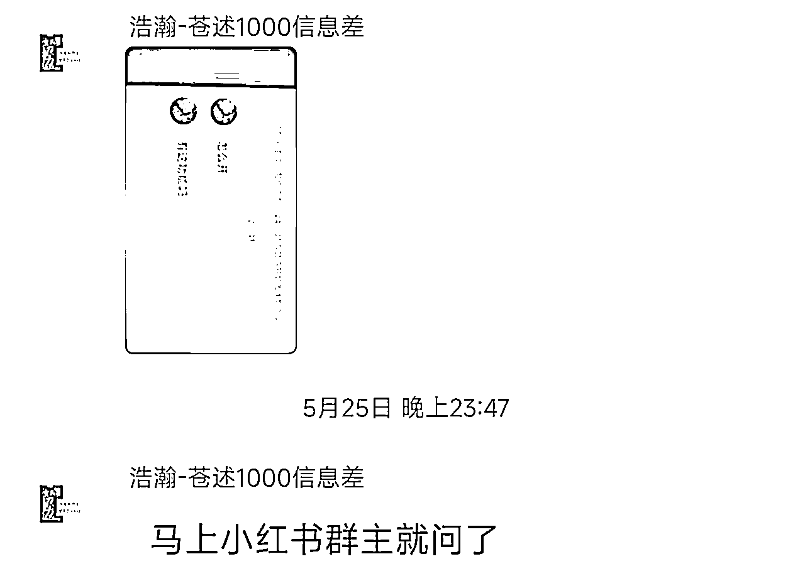

来源：https://uwdpzjnryu8.feishu.cn/docx/W8wjdOat3o0F5xx2UpIcsTienge
风向标，小白到底怎么使用？
大家好，这里是北京圈友【苍述】。
在5月25日，我在风向标中分享了一个具有完整流程的，门槛极低的，几乎是看了去做几十分钟就能赚到钱的蓝海项目：小红书群聊禁言。风向标被先中标，后加精华。证明亦仁大大也是比较认可这个标的价值的。
靠着生财的曝光，这个本来市场上几乎没有人做的项目，在两天时间内超过千人下场，小红书相关笔记增加超过2000篇。短短三天，帮别人禁言一个号的客单价已经从99元被卷到9.9元一次。到目前可以说小白再下场也只能赚到一些辛苦钱了。
这篇文章，会给这个项目的发现到卷成红海做一个复盘，并且会更清晰给小白做一个教学：
风向标，小白到底怎么用才能到赚钱。
为什么门槛这么低的项目，你没看到，或者看到了没深入去想？
最近在让团队成员做小红书引流。现在一个普遍、安全的方式其实就是通过先引流进小红书群聊，然后在群聊里发微信号之类的引流进私域。那很显然我要自己先去加几个群看看同行都怎么做的，才能总结好打法去让别人做执行。
随即我加了几个群，那一个很直观的信息就是，有人在小红书群聊里截流，被群主疯狂撤回：
再联想到之前我的群友，没事总深更半夜等管理员睡了，跑到人家小红书群里截流去，可以很明显的看出来，无法禁言或者是自动撤回小红书群聊，是小红书群主们一个很严重的痛点。
如果某些特定人群，不得不花大量精力去做一件对他们自己没什么收益的事，那这是个痛点还不明显吗？
在这个时候，我还不知道小红书可以通过旧版本来禁言， 我第一反应是这个可以通过开发一个插件来解决，卖个卡密，一个月赚个几万很容易，但我也没想自己团队去做这件事（这个项目确实天花板比较低），准备找个技术团队对接一下扔给他们做，我分成或者是干脆送个人情给他们赚钱算了。
这时候我找乔帮主聊了一下，可以看出这时候项目还没成型（话说如果当时我真砸钱做了插件，后面旧版本方法的出来那我反而会亏不少）。
与此同时，我还把这个思路扔到我的社群里讨论了一下，没想到获取了比较有价值的信息：
通过聊天记录可以看出：小红书群聊，是有禁言功能的，可以通过一些特殊的方式打开。
这个时候我上网查了一下，全网基本上没有这种教程，我寻思那我去淘宝问一下这种服务，要是有这种能力的话淘宝那帮专业的应该都会做。但是结果非常出乎我的意料：
我找了五家商品详情中号称能解决小红书一切问题的工作室，竟然只有一家能搞这个事，收费50。
我立刻意识到这其中的信息壁垒是非常强大的，整个市场处于一片彻底的蓝海。
同时我随便加了五个小红书群聊，发了我能帮群主开禁言的话术，立刻就有一个人私聊我：
至此这个项目的闭环彻底完成，一个最简单的方式：你去接单然后让淘宝帮你开，赚五六十差价，一天都能赚不少。
同时我直接发到了社群里：
让群友想玩的可以去搞一下，我自己团队是没时间做这个，没想到群友更给力：
同时还自发总结出了SOP：
至此，项目的闭环彻底清晰了。同时我觉得这个项目确实也能很容易的赚到钱，对小白是很友好的项目，就将它发送到了风向标中。没想到当天晚上被中标+加精，持续增加了曝光，这也是这个项目进入红海的开始。
风向标被加精之后，当天晚上这个项目就涌入了上百个下场者，在后面两天的时间里下场执行的朋友保守估计更是超过千人，小红书相关的笔记生产就超过2k篇。
这两位老哥都是群友，把具体方法也公布在了评论区
可以看到这个项目的热度是很高的，因为他确实是个你用一个简单的方法，帮别人随便搞一下，几十上百块就到手的项目。同时它自带大量的需求，很容易出单，可以看出大家热情挺高。
不过因为下场的人太多，仅仅2天时间，项目就被卷成红海，已经到了9.9元客单价的地步。
但还是有很多人通过这个项目赚到钱了，甚至现在还在持续赚钱，那么他们是怎么赚的呢？
这是最简单的最朴实对很多人来说也是最朴实的方式，简单来说：干就完了。
很明显，我这个风向标的门槛非常低，你直接去执行半小时不到就能学会，半小时以后你没准都开始出单了，那5月25号当天晚上，你就算什么方法都不用，就最朴素的方式，自己手动一个个加群发广告，都能赚到钱。

先执行起来，永远是最重要的。执行起来拿到反馈，你才能根据反馈去迭代方法。
不然说啥都是扯淡
项目卷成红海了，怎么办？
你还在这原生方式，一个一个私聊群主发广告？那撑死了赚个辛苦钱。
在这个阶段，还想下场赚钱，你要做的是创新，是优化，是差异化。
你必须有能打出差异的思路方法，这个阶段你才能赚到钱。比如你的话术很牛，比如你有特殊打法，再比如你有特别的进群方式。
举三个群友的例子：
AB话术
很简单的道理：咱们的成交源于能解决目标客户的痛点，但是他如果还不痛怎么办？
那你帮他痛一下。
批量找群进群
有的同学通过不同手机对比，发现了小红书有的版本有“群聊广场”这个东西，这样就免于你去一个个搜索笔记通过笔记跳转群的麻烦路径。
还有些同学通过群聊广场，结合批量进群脚本，做到了大量快速进群。
你在这费劲半天一个小时找20个群，人家十分钟加两百个群，你怎么和他竞争？
主动营销转被动营销
这部分同学， 从各种平台发布文章笔记（比如小红书上这两天新增的笔记），给自己打广告，那刷到这条笔记的群主，如果有这种需求很容易就会自己加他去成交，如果笔记互动数据、曝光能做上去，那很显然比手动加群强不少。
有准备的人，永远是最赚钱的。
试问各位，小红书禁言项目，怎么玩最赚钱？批量进群，大量笔记铺广告？主动发笔记，等客上门？
都不是。
首先你要知道：生财很大，足足有四万人。但生财也很小，小到按比例来说，大部分人哪怕是网创圈的人，都根本就没听过这个社群（兄弟们能有幸加入生财，本身就胜过很多人了哈哈）。
那么很显然，一个在生财的风向标上被大量曝光的项目在生财的热度可能很高，但在圈外可能毫无声音。那么这个项目的方法本身就是信息差。真正赚钱的不是自己去动手做的人。
真正赚钱的是那些自己有了不少的私域沉淀或者粉丝基数，收徒教学卖铲子的人
光这两天，我已经在朋友圈里看到了大量的收徒教学，就光小红书禁言这一个玩法，最高的我已经看到了有收799还出单的，剩下普遍也在2-6百左右。这部分人就叫做【已有准备者】，一个天花板不高的项目出来之后，他不挖金子而是卖铲子，可以利用项目教学快速变现，至少可以保证收益绝对是正的。又或者是让学徒寻找线索，自己只负责操作的。而且如果私域沉淀人数够多，哪怕是卖199一份一天都能卖出几万。
一个项目如果门槛够低，快速从出现到红海其实是不可避免的。实际上，风向标并没有“毁灭”这个项目，反而是让大家能在项目红海前尝试分一杯羹。
同时生财的体量在这里，一个项目出现在风向标中，很多人快速的下场是不可避免的。你要学会的是如何在这些人中打出差异化，或者是去辐射生财之外的更广阔的世界。
风向标的价值到底有多少？
举个简单例子：我自己到目前跑通的三个项目，全都是从风向标中获取的，你说有多少。
每一个中标的风向标，背后蕴含的价值都可能超乎你的想象，你没用它赚到钱，很可能只是你思路不行或者你不匹配它的行业方向。
但风向标本身有着很强的时效性，因为不是每个风向标都是完全的蓝海，又或者有很多风向标是自带门槛的。这就要求，你想获取风向标中蕴含的真正价值这件事，也是需要你刻意练习的：我上一个章节中说到的三种能赚到钱的人，并不是三种不同的人，而是同一个人的不同时期。
面对中标的风向标，你如果是一个小白，你认为这个项目能和自己匹配，你首先要成为一个快速行动者，在这个行动中不断积累经验反馈。经验、反馈足够之后，你就会想到优化、放大，那么你在以后的项目里就会成为思路优化者。同时你做的项目足够多了，有一些人脉、资源储备了，那你就会成为已有准备者，然后在未来遇到某个足够适合你的风向标时一飞冲天。
从风向标中赚钱，这个能力也是需要刻意练习的，他并不是天生的。
最后再做一个自我介绍：苍述，大厂程序员，之前做保健品行业流水百万，因政策不得不停止。目前携带三人团队转向互联网创业，已经跑通两个小型闭环。因为我们团队主力基本都是程序员工资比较高，所以我们团队的宗旨是：不赚小钱（或者说是不做天花板不高的项目），只为了交朋友。希望能通过与各位的链接找到能赚大钱的方向。
目前为止，我在生财中发了几个教学贴收到了不少小白的赞誉。 但任何人做任何事都有目的，我当然不会说我自己发帖是为了无私分享。诚实的说，我发贴的目的就是希望提升我在生财中的影响力，以期望可以认识更多的人，增加更多的链接，期待在其中可以遇到我们团队的“贵人”。但这个贵人不一定是需要多NB的身份，也许他也是一个小白，但是一句话被我们听到了就奠定了我们团队的方向。
也包括我将小红书禁言这个项目完整发送在风向标中，都是为了这个目的。以后我也会不断为小白拆解更多能轻松入局实操可以赚钱的项目（大部分项目会先发在内部群中进行验证）。
最后感谢生财提供的平台，希望大家都有机会成为对方的贵人，与大家共勉。
过去文章：